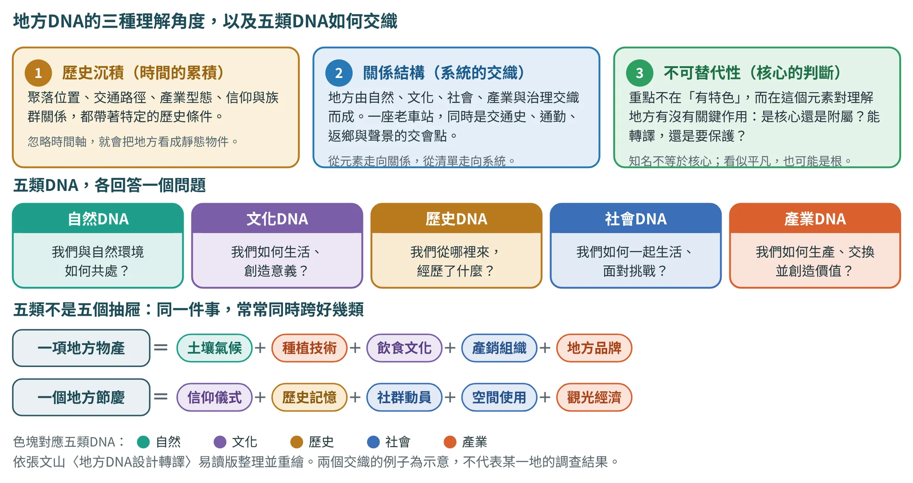
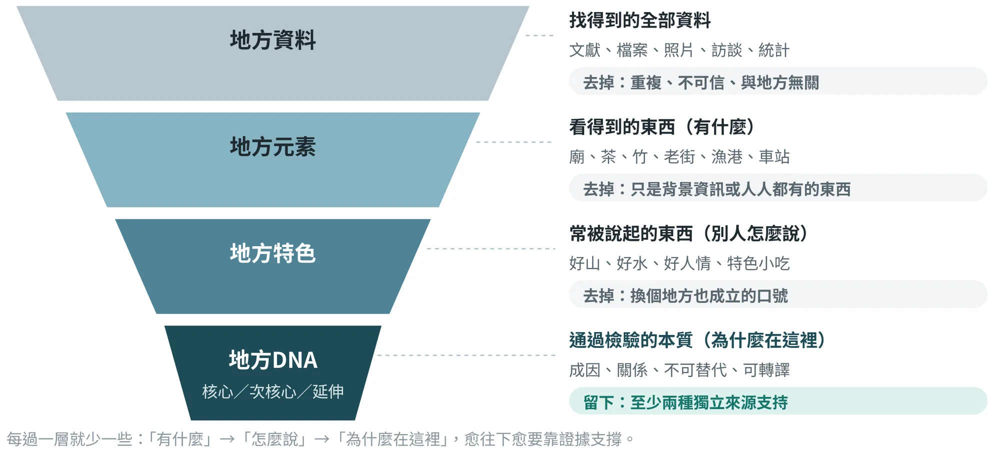
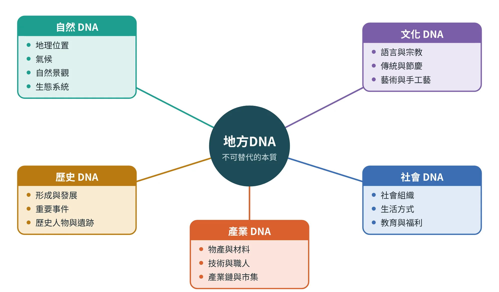
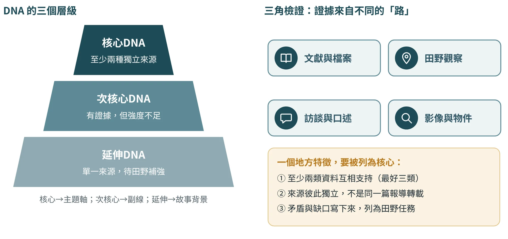
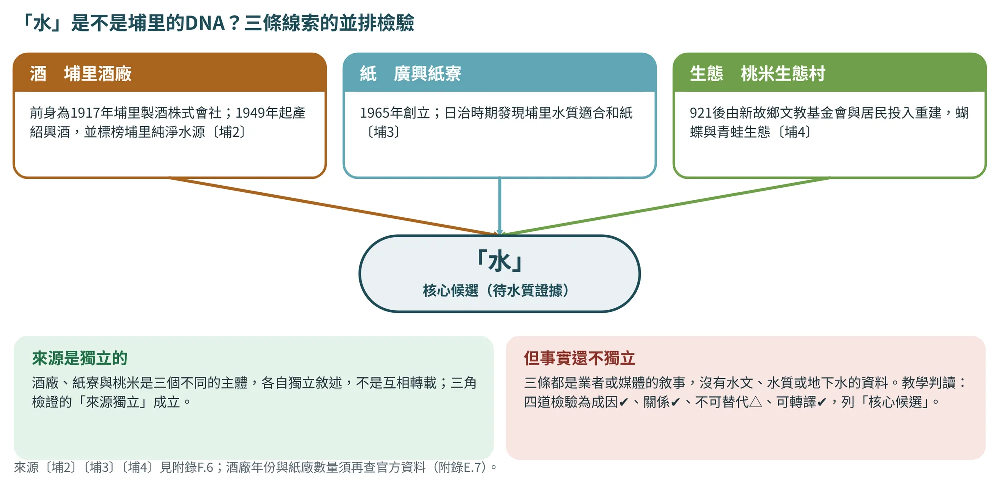
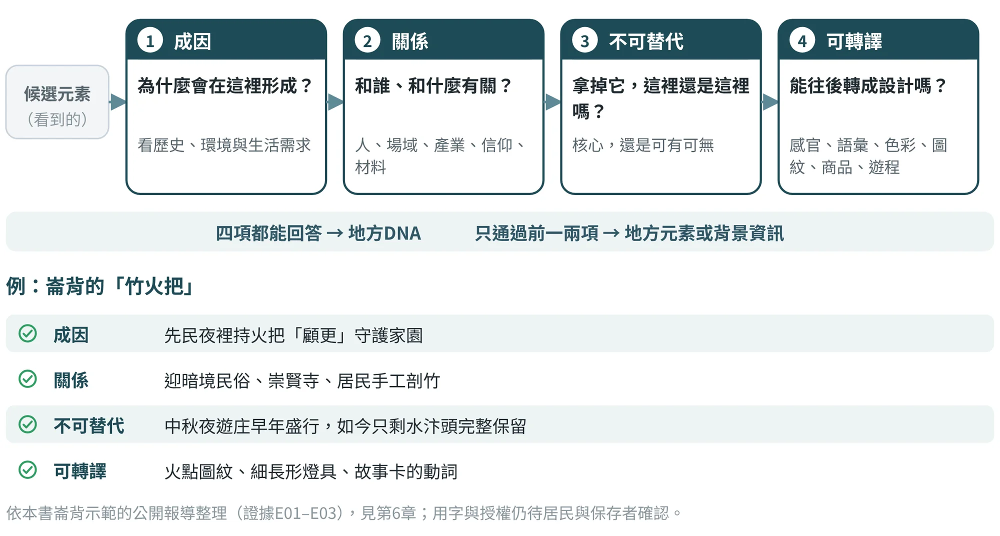
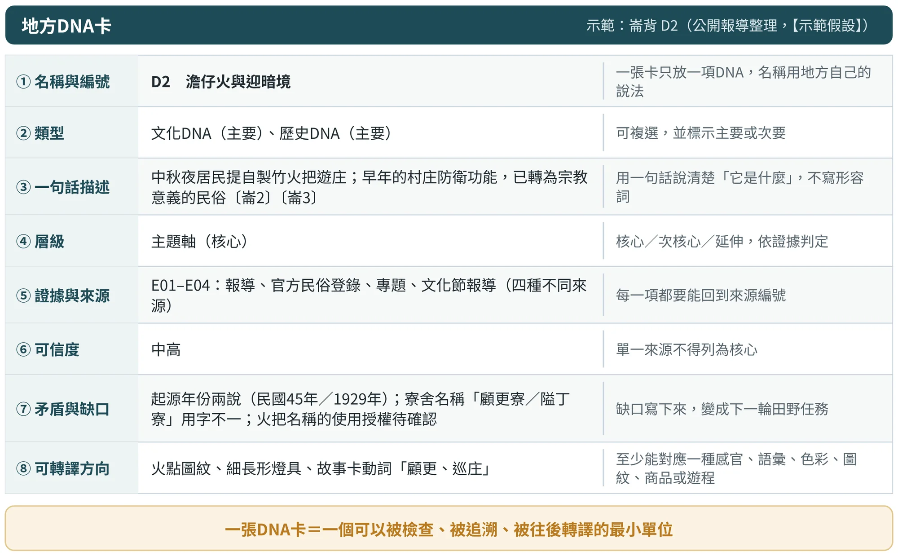

什麼是地方DNA
定義、五種類型、三個層級與四道檢驗
2.1地方DNA是什麼#
「地方DNA」是一個比喻。生物的DNA是長期演化累積的結構，它決定生物的基本樣貌，也決定它如何表現出各種性狀。地方也一樣：土地、歷史、信仰、產業與人群的關係，經過很長的時間累積，形成一種結構，這個結構決定了這個地方「為什麼是現在這個樣子」，也決定了它能長出哪些魅力。
依張文山的教學簡報，地方DNA可以理解為「地方特有的基因」，用來描述一個地方獨特的文化、歷史、環境與社會特徵。這些特質影響這個地方的發展方式、居民的生活方式，以及外界對它的感知。
這個定義有三個關鍵詞，後面所有的方法，都是在檢查它們：
- 本質：不是表面的外觀，而是形成這個地方的原因與結構。
- 不可替代：拿掉它，這個地方就會變得不一樣；換一個地方，它不會自然成立。
- 可轉譯：能被轉成感官、語彙、色彩、圖紋、商品、遊程或制度。如果只能存放在文獻裡，它就還不能支撐設計。
提醒：「DNA」是教學上的比喻，不是科學概念。地方不會像基因那樣固定不變，居民也會不斷重新詮釋自己的地方。因此本書把DNA當成「工作定義」：它必須有證據支持、可以被居民檢核，而且允許被修正。
三個角度：歷史沉積、關係結構、不可替代性
上面的定義有三個關鍵詞；作者的易讀版又用三個更生活化的角度，說明地方DNA為什麼不是一份特色清單（圖2.1）。
- 它是一種歷史沉積。 地方不是突然形成的，而是在時間中累積。聚落位置、交通路徑、產業型態、宗教信仰、族群關係、生活方式與地方記憶，都和特定的歷史條件有關。若只從眼前看得見的景點或商品出發、忽略時間軸，就會把地方看成靜態的物件，而不是不斷生成的生活世界（時間軸的做法見6.6節）。
- 它是一種關係結構。 地方由自然環境、文化形式、社會組織、產業活動與治理機制彼此交織而成。例如一座老車站，不只是建築物，它同時可能是交通史、商業發展、居民通勤、青年返鄉、城市入口、鐵道聲景與地方記憶的交會點。辨識DNA，要從元素走向關係，從資源清單走向系統理解（第6章的脈絡分析圖就是做這件事）。
- 它是一種不可替代性。 重要的不是元素「很有特色」「很有故事」，而是它對理解這個地方有沒有關鍵作用。有些元素知名度很高，卻只是表層符號；有些看似平凡，卻深深連結日常生活與集體記憶。DNA研究要判斷：哪些元素是核心、哪些只是附屬，哪些可以轉譯，哪些需要保護、保存或慎重協商。

2.2地方DNA不是什麼：從資料到DNA的漏斗#
初學者最常見的問題，是把「找得到的資料」「看得到的東西」或「常被說起的特色」直接當成DNA。可以用一個漏斗來理解它們的關係（圖2.2）：資料經過篩選成為元素，元素經過觀察成為特色，特色再經過檢驗，才有可能成為DNA。

下表（表2.1）把五個常被混用的詞放在一起比較。請特別留意最右欄「容易出什麼問題」：每一欄的問題，都可以在你看過的地方創生成果裡找到例子。
| 概念 | 回答的問題 | 例子（以崙背示範為例） | 容易出什麼問題 |
|---|---|---|---|
| 地方資料 | 找得到什麼？ | 人口統計、新聞報導、照片、訪談逐字稿 | 沒有經過篩選與核對，量多不代表有用 |
| 地方元素 | 這裡「有什麼」？ | 竹、火把、洋香瓜、廟、客語 | 換一個地方也成立；直接畫成圖案就是「元素擷取」 |
| 地方特色 | 別人「怎麼說」這裡？ | 「詔安客家文化」「瓜果之鄉」 | 常停在口號，沒有證據，也說不出和別處的差別 |
| 地方資源 | 現在「可以用」什麼？ | 空間、人才、社團、經費、設施 | 資源是手段，不是本質；有資源不等於有方向 |
| 地方DNA | 為什麼會在這裡形成？彼此有什麼關係？拿掉會怎樣？ | 澹仔火與迎暗境：竹火把＋守護家園的歷史＋中秋夜遊庄的社群＋詔安客語脈絡 | 需要證據與檢驗，要花時間；做不到就容易退回口號 |
崙背例子依公開報導整理〔崙2〕〔崙3〕〔崙10〕，為教學示範，須以田野與居民檢核取代；詳見第6章與第17章。
2.3五類DNA：自然、文化、歷史、社會、產業#
為了不漏看，也為了讓不同小組的成果可以比較，本書把地方DNA分成五類（圖2.3）。簡報中提到的「地方DNA包括多個層面」，列出了文化特徵、歷史背景、自然環境與社會結構；本書再把「產業」獨立出來，因為在地方創生與商品設計裡，物產、材料、技術與職人是最容易落地的一條線。

下表（表2.2）說明每一類該問什麼問題、通常去哪裡找資料，以及最常見的誤區。五類不是五個抽屜，而是五個「視角」：同一件事可以同時屬於好幾類，編碼時標出「主要」與「次要」就好。
| 類型 | 要問的問題 | 典型資料來源 | 常見誤區 |
|---|---|---|---|
| 自然DNA | 土地、水、氣候與生物，怎樣決定了這裡的生活與產業？ | 地圖、氣象與地質資料、生態調查、田野觀察 | 只寫「好山好水」；忽略自然條件如何形成產業與習俗 |
| 文化DNA | 居民說什麼話、信什麼、慶祝什麼、做什麼手藝？ | 訪談、祭典觀察、碑記、辭典、民俗登錄 | 把宗教與族群符號直接當裝飾；用外人的詞取代居民的詞 |
| 歷史DNA | 這裡怎麼形成、經歷什麼事、留下什麼人與物？ | 方志、檔案、舊照片、耆老口述、地名考證 | 把年代流水帳當成DNA；不同說法互相矛盾時，只挑一種寫 |
| 社會DNA | 人們如何組織、如何生活、彼此如何連結？ | 社區組織資料、統計、訪談、參與觀察 | 只看人口數字，忽略關係、規範與角色 |
| 產業DNA | 這裡靠什麼生產與交易？材料、技術與知識怎麼傳承？ | 產業統計、職人訪談、市集觀察、材料盤點 | 只看「產品」，不看材料、技術與知識；只看現在，不看形成過程 |
五類不是五個抽屜。很多地方元素同時跨好幾類：一項地方物產，可能和土壤與氣候（自然）、種植技術與產銷組織（產業）、飲食文化（文化）、地方品牌（社會）都有關；一個地方節慶，可能連結信仰、歷史、社群動員、空間使用與觀光經濟。分類的目的，不是把元素分進格子，而是看見它背後的整體關係；一個元素跨越的類別愈多，通常愈接近地方關係網絡的樞紐（6.5節的「高潛力轉譯點」就是這樣找出來的）。
不同案例的分類方式
第3章會介紹鳥取、居鑾與怡保三個案例。簡報中它們各自用了不同的分類名稱，下表（表2.3）把它們對應回本書的五類，讓你看到：分類名稱可以因地制宜，但只要能回到五類，就不會漏看。
| 案例 | 簡報中的分類名稱 | 對應到本書的五類 |
|---|---|---|
| 鳥取縣 | 地景DNA、文化DNA、產業DNA、人文DNA | 地景→自然；文化（妖怪、砂雕、民藝）→文化；城下町與武士→歷史；產業→產業；人文（幸福度、人與自然共生）→社會 |
| 居鑾鐵道 | 歷史DNA、城市結構DNA、社會DNA、產業DNA、生活DNA | 歷史→歷史；城市結構→歷史＋社會；社會→社會；產業（咖啡、市場）→產業＋文化；生活→社會 |
| 怡保 | 歷史DNA、自然DNA、城市DNA、美食DNA、產業／工藝DNA、社會DNA | 歷史、城市→歷史；自然→自然；美食→文化＋產業；產業／工藝→產業；社會→社會 |
對應為本書編寫的教學示意，原案例分類依張文山教學簡報；案例事實出版前須查證（附錄E）。
九個案例的候選DNA：放進五類之後看到什麼
把九個案例的候選項放進五類DNA（表2.4），共得到47項候選，另有1格是明確的缺口（居鑾的自然類）。粗體是簡報或文件認定的核心與次核心，其餘是延伸或「不列DNA」的項目。其中14項在四道檢驗（2.5節）中四道都過了，而且九個案例每一個至少有一項；但這個分類表同時顯示了三個傾向，值得在開始蒐集證據之前先知道。
- 產業類最多，核心卻最少。 產業有16項候選，只有1項是核心，另有10項是延伸或「不列DNA」。物產、品牌與新事業最容易列成清單，也最容易和別的地方重疊（2.5節的反例表）。
- 社會類最難被文件證明。 社會類7項裡，只有桃米的社區重建（埔里）是核心，其餘6項都是延伸，且多半只有單一來源：族群、關係與社群，要靠田野與居民檢核，不能靠簡報敘述。
- 歷史與自然類比較容易站穩。 歷史類10項、自然類7項，核心各有4項與3項；它們多半有百科、官方頁面或地方志可以交叉對照。
這個傾向不是說某一類比較「重要」，而是提醒：同樣是「候選」，不同類別需要的證據路徑不同（表2.2）。看見自己的候選集中在某一類時，要先回頭問，是這個地方真的偏重某類，還是蒐集資料時只找得到某類。
| 案例 | 自然 | 文化 | 歷史 | 社會 | 產業 |
|---|---|---|---|---|---|
| 鳥取 | 鳥取砂丘 星空（「星取縣」） | 水木茂與妖怪文化 因州和紙、弓濱絣與倉吉絣 | — | 慢生活與幸福度高（延伸） | 松葉蟹、二十世紀梨、鳥取和牛 |
| 居鑾 | （缺口：簡報未列） | — | 居鑾車站與英殖民鐵道 | 以車站為中心向外擴散的城市結構（延伸） 跨族群的鐵道社群（延伸） | 站內的鐵道咖啡（Kluang Rail Coffee） |
| 怡保 | 喀斯特石灰岩洞與洞穴寺廟 | — | 錫礦史與近打谷 老城格網與怡保車站 | 芽菜雞與河粉（延伸） | 白咖啡 錫器工藝（延伸） |
| 斗南 | — | 戲偶雕刻（偶的家）（延伸） | 他里霧的車站與糖鐵、台鐵倉庫群 | 步行可達的小鎮尺度（節點相距約400至950公尺）（延伸） | 農食職人群：碾米、醬油、養鴨、綠竹筍 絲瓜絡與昔日「菜瓜寮」（延伸） 智慧販賣機茶屋（讀讀小茶屋）（不列DNA） |
| 古坑 | 麻竹與「麻園」地名（延伸） 山嵐雲霧與水流（延伸） | — | 日治時期的咖啡栽培與921後的轉型 菸樓與田疇（延伸） | — | 稻作與地瓜（延伸） |
| 土庫 | — | 順天宮與六房媽聚落文化圈（土庫股） | 北港進香路上的中繼城鎮 糖鐵與車站記憶（延伸） | — | 醬油、食用油、蜂蜜等加工（延伸） 有機可可（土庫驛農場）（不列DNA） |
| 北港 | — | 朝天宮媽祖信仰與迓媽祖繞境 | 笨港舊址與水道頭（日治自來水廠）（延伸） | 牛墟（延伸） | 花生、麻油、大餅等傳統食物（延伸） 宏昇芽菜與豆菜庄（延伸） |
| 鹿谷 | 麒麟潭與水資源（延伸） | — | 八通關古道與開拓史（延伸） | — | 凍頂烏龍茶 竹、筍與瑞田米（延伸） 陶藝與陶瓷廢料（不列DNA） |
| 埔里 | 「水」：酒、紙、生態三條線索 | 手工紙（廣興紙寮） 紙教堂（外來遷建物件）（不列DNA） | — | 桃米社區的重建與生態村 | 紹興酒（埔里酒廠） |
依本書對九個案例現有文件的桌面審查整理（來源編號見附錄F.6）；工藝併入文化，產業含新事業與循環材料。「（延伸）」「（不列DNA）」的判斷見17.6節各案例的四道檢驗表。
2.4三個層級與三角檢證#
找出十個、二十個DNA候選，並不難。難的是回答：哪些是「主題軸」，哪些只是「故事背景」？本書用三個層級來整理（圖2.4）：
- 核心DNA：至少有兩種獨立來源支持，而且能支撐後續的視覺、商品與遊程設計；通常用作「主題軸」。
- 次核心DNA：有證據，但強度不足，例如只有單一強來源，或主要來自二手整理；通常作為「副線」。
- 延伸DNA：目前只有單一來源，要等田野補強；先作為故事背景，不作主軸。

決定層級靠的是三角檢證：同一個地方特徵，至少要有兩種以上「獨立」的資料來源支持，核心主張最好有三類。這裡的「獨立」很重要。三家媒體轉載同一份新聞稿，只算一個來源；同一位受訪者在不同場合說的話，也只算一個來源。真正有效的是「不同的路」：文獻與檔案、田野觀察、訪談與口述、影像與物件。
來源獨立，事實不一定獨立：埔里的「水」
三角檢證（本節前面）檢查的是「幾條路、是不是各自獨立」。埔里提供了一個值得練習的例子：酒廠說自己用好水〔埔2〕，紙寮說水質適合造紙〔埔3〕，桃米的生態村以濕地與蛙類為本〔埔4〕，三條線索都指向「水」，看起來像標準的三角檢證（圖2.5）。
但仔細分辨，會發現兩種不同的「獨立」。來源是獨立的：酒廠、紙寮與桃米是三個不同的主體，各自敘述，不是互相轉載。事實卻還不獨立：三條都是業者或媒體的敘事，沒有水文、水質或地下水的資料，等於三個人都在說「我這裡水很好」，卻沒有人拿出水質報告。三角檢證只能檢查到前者，後者要靠證據矩陣裡的「資料類型」欄補上（5.3節）。所以「水」在本書只列為核心候選，等水質證據補齊才升級。

2.5四道檢驗：這個候選項是不是DNA？#
層級告訴你「多重要」，但還沒有告訴你「是不是」。一個候選項要被認定為地方DNA，需要通過四道檢驗（圖2.6）：
- 成因：它為什麼會在這裡形成？能不能從歷史、環境或生活需求說出理由？
- 關係：它和誰、和什麼有關？（人、場域、產業、信仰、材料）孤立的東西只是元素。
- 不可替代：拿掉它，這裡還是這裡嗎？是核心，還是可有可無？
- 可轉譯：它能往後轉成感官、語彙、色彩、圖紋、商品或遊程嗎？

四項都能回答，才是地方DNA；只通過前一兩項，通常是地方元素或背景資訊。下表（表2.5）用三個崙背的候選項示範：
| 候選項 | 成因 | 關係 | 不可替代 | 可轉譯 | 判斷 |
|---|---|---|---|---|---|
| 澹仔火與迎暗境 | ✔ 先民持火把顧更守護家園〔崙4〕〔崙7〕 | ✔ 村庄、廟、手工剖竹的居民 | ✔ 早年農村盛行，如今水汴頭完整保留〔崙3〕 | ✔ 火點圖紋、燈具、故事動詞 | 主題軸（核心） |
| 沖積平原的瓜與菜 | ✔ 濁水溪沖積土壤〔崙13〕 | ✔ 溫室栽培、產區、農民 | △ 產區也見於他處；但崙背占雲林洋香瓜約三分之二（2014）〔崙13〕 | ✔ 瓜網紋理 | 次核心 |
| 舊稱「小上海」的商業中心 | △ 說法來自二手整理〔崙22〕 | △ 資料不足 | ？ 尚無資料 | △ 缺少視覺線索 | 延伸（待田野補強） |
✔＝已有證據支持；△＝部分支持或強度不足；？＝無資料。判斷為示範假設，用來說明方法。
九個案例中，哪些「看起來像DNA」卻不是？
四道檢驗最有用的地方，不是替好的候選項背書，而是擋下看起來像、卻站不住的候選項。九個案例裡就有八個這樣的例子（表2.6）。它們的共同點是：很容易被寫進簡報或提案的「特色」欄，也很容易畫成圖案，但至少卡在一道檢驗上。
請注意，「不是DNA」不等於「不重要」。有機可可可以是一門好生意，窯火再生是漂亮的循環設計，芽菜甚至是必須被保存的技藝。本書要求的只是把它們放在對的位置：新事業歸新事業，可轉化物歸第16章，瀕危技藝先談保存，而不是都擠進「地方DNA」這一欄，讓上游的證據替下游的投資背書。
| 候選項 | 案例 | 卡在哪一道檢驗 | 本書的處理 |
|---|---|---|---|
| 有機可可 | 土庫 | 與土庫的歷史、產業或信仰沒有可說明的關係，通不過「成因」與「不可替代」 | 列為新事業；糖業記憶與甜食工藝的連結只是可檢驗的假說待確認 |
| 智慧販賣機茶屋（讀讀小茶屋） | 斗南 | 簡報未說明茶與斗南歷史的關係；價值在青創與茶渣循環 | 不列DNA；放進16.4節的循環材料討論 |
| 紙教堂 | 埔里 | 1995年神戶建築、後來遷至埔里，與埔里自身歷史的關係是遷建，只有媒體敘述 | 不列在地DNA；若使用，須說明它是外來物件 |
| 陶瓷廢料與窯火再生 | 鹿谷 | 是問題與可轉化物，不是茶鄉的本質；茶才是核心 | 放在第16章的「可轉化物」，與DNA分開寫 |
| 芽菜（豆菜庄） | 北港 | 通過成因與可轉譯，但已瀕危（提案載僅剩3戶）；「全台唯一」是最高級說法，待查 | 保存優先於轉譯：先保存技藝與農戶，再談商品待確認 |
| 稻、地瓜、山嵐與水流 | 古坑麻園 | 台灣各地都有，通不過「不可替代」 | 通用元素；須轉成麻園特有的地點、視線或時刻 |
| 慢生活與幸福度高 | 鳥取 | 簡報沒有出處，只通過「可轉譯」 | 列延伸（待補強）；更像價值主張，不是DNA |
| 跨族群的鐵道社群 | 居鑾 | 沒有來源；簡報兩處列的族群名單不同 | 列延伸，轉成田野任務 |
判斷依本書對各案例現有文件的桌面審查（來源編號見附錄F.6）；四道檢驗的完整記錄見17.6節。
2.6把DNA寫成一張卡#
通過檢驗的DNA，要寫成一張「地方DNA卡」（圖2.7）。這張卡是整本書最小的工作單位：後面的感官、語彙、色彩、圖紋、商品與遊程，都會回頭指向某一張DNA卡。卡上的八個欄位，每一欄都有用意：證據欄防止憑印象，缺口欄把不確定變成田野任務，轉譯方向欄把DNA接到設計。

一句話描述的寫法
第③欄「一句話描述」最難寫，也最重要。好的描述有三個特徵：用名詞與動詞，不用形容詞；包含關係與成因；可以被反駁，也就是別人讀了，可以回答「對」或「不對」。
| 不好的描述 | 改寫成可檢驗的一句話 |
|---|---|
| 崙背有豐富的客家文化。 | 崙背、二崙、西螺一帶是全台詔安客最密集的聚落，約2.5萬人識得詔安客語；但學童中懂客語的不到一成（校長說法）〔崙1〕〔崙8〕〔崙10〕。 |
| 崙背有特別的中秋民俗。 | 中秋夜居民提自製竹火把遊庄；早年的村庄防衛功能，已轉為宗教意義的民俗〔崙2〕〔崙3〕。 |
| 好山好水好人情。 | （無法改寫：沒有可檢驗的內容，表示它還不是DNA，回到第5章補證據。） |
以上依公開報導整理，為教學示範；詔安客人口數為估計值，須回原始統計核對；數字與說法均須經田野與居民檢核（附錄E）。
2.7AI協作：讓AI做初步編碼，由你決定層級#
DNA萃取是AI最容易「幫倒忙」的地方：它會把一般常識包裝成漂亮的地方故事。因此要記住兩條界線：第一，AI只能依據你提供的資料做分類與比對；第二，核心與否由人依證據判斷（第13、14章會完整說明）。下面這則提示詞，是本書建議的起點。
只依據我提供的資料，將地方特徵分類為自然、文化、歷史、社會、產業五類DNA；合併同義項並標示跨類關聯。每項附「原始證據、來源、支持強度1–3、待確認處」，最後提出核心／次核心／延伸DNA候選。不得以一般常識補寫地方故事；證據不足一律標「待確認」，並在最後列出「人工查核清單」。
使用方式：先貼上你整理好的資料（附來源編號），再貼這則提示詞。AI給的「層級」只是候選；請回到證據核對，不合理的就改。